CSC477 Introduction to Mobile Robotics
Week #10: Particle Filters
Recommended reading
Lesson 3 in https://www.udacity.com/course/artificial-intelligence-for-robotics--cs373
Chapters 4.3 and 8.3 in the Probabilistic Robotics textbook
KF vs EKF vs PF
| Kalman Filter | Extended Kalman Filter | Particle Filter | |
|---|---|---|---|
| Dynamics model | Linear | Nonlinear | Nonlinear |
| Sensor model | Linear | Nonlinear | Nonlinear |
| Noise | Gaussian (Unimodal) | Gaussian (Unimodal) | Multimodal |

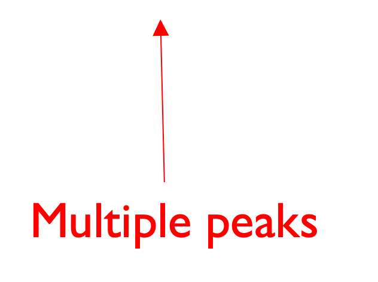
How can we represent multimodal distributions?
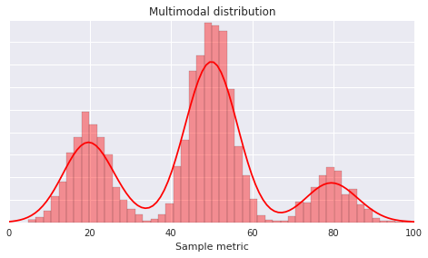
Idea #1: Histograms
Advantages: the higher the number of bars the better the approximation is
Disadvantages: exponential dependence on number of dimensions
Note: this approach is called the Histogram Filter. It is useful for low-dimensional systems but we will not study it in this class.
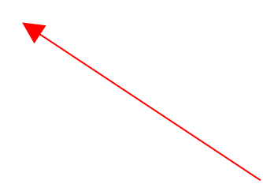
Idea #2: Function Approximation
How can we represent multimodal distributions?
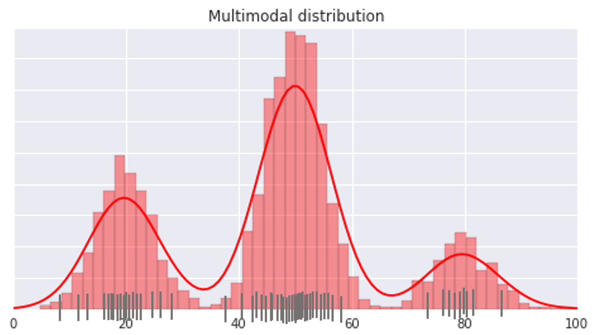
Idea #1: Histograms
Advantages: the higher the number of bars the better the approximation is
Disadvantages: exponential dependence on number of dimensions
Note: this approach is called the Histogram Filter. It is useful for low-dimensional systems but we will not study it in this class.
Idea #2: Function Approximation
Idea #3: Weighted Particles \(\{(x^{[1]},w^{[1]}),...,(x^{[M]},w^{[M]})\}\)
Advantages: easy to predict/update by treating each particle as a separate hypothesis whose weight is updated.
Disadvantages: need enough particles to “cover” the distribution
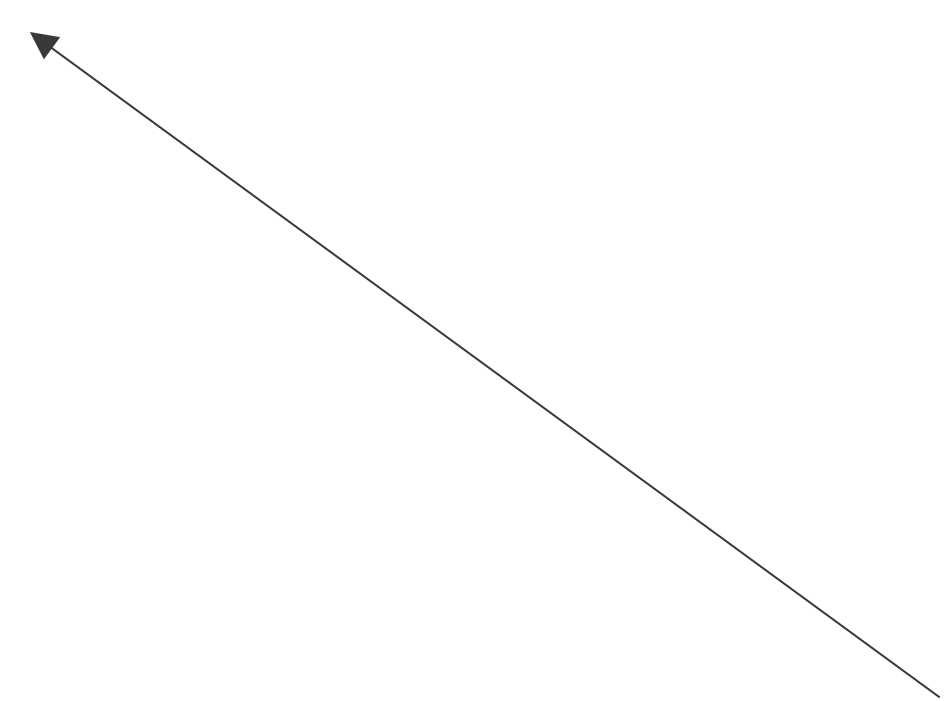
How can we represent multimodal distributions?
\[\begin{align} bel(x_t) &= p(x_t|z_{0:t}, u_{0:t-1}) \\ &= \sum_{m=1}^{M} \begin{cases} w^{[m]}/W & \text{if } x_t=x_t^{[m]} \\ 0 & \text{o.w.} \end{cases} \end{align}\]
Idea #1: Histograms
Advantages: the higher the number of bars the better the approximation is
Disadvantages: exponential dependence on number of dimensions
Note: this approach is called the Histogram Filter. It is useful for low-dimensional systems but we will not study it in this class.
Idea #2: Function Approximation
Idea #3: Weighted Particles \(\{(x^{[1]},w^{[1]}),...,(x^{[M]},w^{[M]})\}\)
Advantages: easy to predict/update by treating each particle as a separate hypothesis whose weight is updated.
Disadvantages: need enough particles to “cover” the distribution
Higher density of
particles means
higher probability
mass
How can we represent multimodal distributions?
Want particles to be drawn from the belief at time t:
\[x_{t}^{[m]}\sim p(x_{t}|z_{0:t},u_{0:t-1})\]
Idea #1: Histograms
Advantages: the higher the number of bars the better the approximation is
Disadvantages: exponential dependence on number of dimensions
Note: this approach is called the Histogram Filter. It is useful for low-dimensional systems but we will not study it in this class.
Idea #2: Function Approximation
Idea #3: Weighted Particles \(\{(x^{[1]},w^{[1]}),...,(x^{[M]},w^{[M]})\}\)
Advantages: easy to predict/update by treating each particle as a separate hypothesis whose weight is updated.
Disadvantages: need enough particles to “cover” the distribution
Higher density of
particles means
higher probability
mass
Particle propagation/prediction
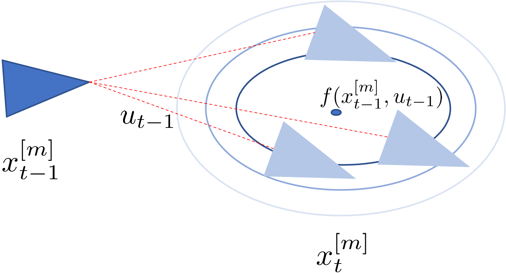
Simulate what is going to happen to the particle at the next time step by drawing a sample from the next state specified in the dynamics (a.k.a. one-step simulator)
\[x_t^{[m]} \sim p(x_t | x_{t-1}^{[m]}, u_{t-1})\]
Usually
\[\begin{aligned} x_{t}^{[m]}=f(x_{t-1}^{[m]},u_{t-1})+w_{t-1}\\ w_{t-1}\sim\mathcal{N}(0,Q) \end{aligned}\]
Particle Update
How to update particle weights after an observation
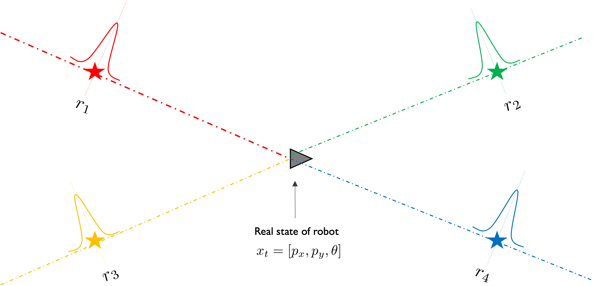
Measurement model \(z_t = h(x_t) + n_t = [r_1, r_2, r_3, r_4] + n_t\)
with \(r_i = \sqrt{(p_x - l_x^{(i)})^2 + (p_y - l_y^{(i)})^2}\) and \(n_i \sim \mathcal{N}(0, \sigma^2)\)
\[\left. \rule{0pt}{1cm} \right\} p(z_t|x_t) = \mathcal{N}(z_t; r_{1:4}, \sigma^2 \mathbb{I}_4)\]
How to update particle weights after an observation
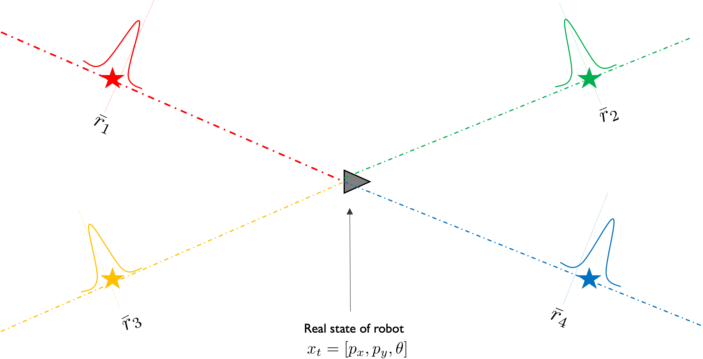
Actual measurement received: \({\bar{z}_t = [\bar{r}_1, \bar{r}_2, \bar{r}_3, \bar{r}_4]}\)
How to update particle weights after an observation
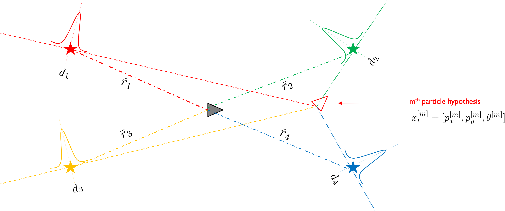
Measurement model \(z_{t}=h(x_{t}^{[m]})+n_{t}=[d_{1},d_{2},d_{3},d_{4}]+n_{t}\)
with \(d_{i}=\sqrt{(p_{x}^{[m]}-l_{x}^{(i)})^{2}+(p_{y}^{[m]}-l_{y}^{(i)})^{2}}\) and \(n_i \sim \mathcal{N}(0, \sigma^2)\)
\[\left. \rule{0pt}{1cm} \right\} p(z_t|x_t^{[m]}) = \mathcal{N}(z_t; d_{1:4}, \sigma^2 \mathbb{I}_4)\]
How to update particle weights after an observation
Q: What is the probability of the actual measurement given the state hypothesized by the particle?
A: \(p(\bar{z}_t | x_t^{[m]}) = \mathcal{N}(\bar{z}_t; d_{1:4}, \sigma^2 \mathbb{I}_4) = \eta \exp(-\|\bar{z}_t - d_{1:4}\|^2 / \sigma^2)\)
How to update particle weights after an observation
Q: What is the probability of the actual measurement given the state hypothesized by the particle?
A: \(p(\bar{z}_{t}|x_{t}^{[m]}) = \prod_{i=1}^{4} p(\bar{r}_{i}|x_{t}^{[m]}) = \prod_{i=1}^{4} \mathcal{N}(\bar{r}_{i}; d_{i}, \sigma^{2}) = \prod_{i=1}^{4} \eta \exp(-(\bar{r}_{i}-d_{i})/\sigma^{2})\)
Assuming range measurements
are conditionally independent
given state
How to update particle weights after an observation
Q: What is the probability of the actual measurement given the state hypothesized by the particle?
A: \(p(\bar{z}_{t}|x_{t}^{[m]}) = \prod_{i=1}^{4} p(\bar{r}_{i}|x_{t}^{[m]}) = \prod_{i=1}^{4} \mathcal{N}(\bar{r}_{i}; d_{i}, \sigma^{2})\)
In the figure above this probability would be low
and this particle would be unlikely.
How to update particle weights after an observation
Particle’s (unnormalized) weight \(\quad w_t^{[m]} \propto p(\bar{z}_t | x_t^{[m]})\)
See Appendix 1 for why
this choice was made
for the weight
The distribution of the particles has not been updated yet. We only updated their weights. To update the distribution of particles we need to do resampling
Sample particles with repetition/replacement,
according to their updated weights.
Resampling Particles
Main goal : Get rid of unlikely particles (with too low weights) and focus on most likely particles (a.k.a. survival of the fittest).
Main mechanism : Sample new set of particles from existing set, with replacement(repetition), so that same particle can be sampled more than once. Sample old particle i with probability \(\propto \text{weight}_i\)
Many possible ways to implement it. Here we present two algorithms.
Resampling Particles: Algorithm #1
new_particles = []
sample u ~ Uniform[0,1]
idx = int( u * (N-1) )
beta = 0
max_w = max(weights)
for each of the N particles:
\(\qquad\) sample v ~ Uniform[0,1]
\(\qquad\) beta += v * 2* max_w
\(\qquad\) while beta > weights[idx]:
\(\qquad\qquad\) beta -= weights[idx]
\(\qquad\qquad\) idx = (idx + 1) % N
\(\qquad\) p = particles[idx].copy() \(\qquad\) new_particles.append(p)
Resampling Particles: Algorithm #2
new_particles = []
sample r ~ Uniform[0, 1/N]
c = weights[0]
idx = 0
for n = 1…N:
\(\qquad\) u = r + (n-1)/N
\(\qquad\) while u > c:
\(\qquad\qquad\) idx = idx + 1
\(\qquad\qquad\) c = c + weights[idx]
\(\qquad\) p = particles[idx].copy()
\(\qquad\) new_particles.append(p)
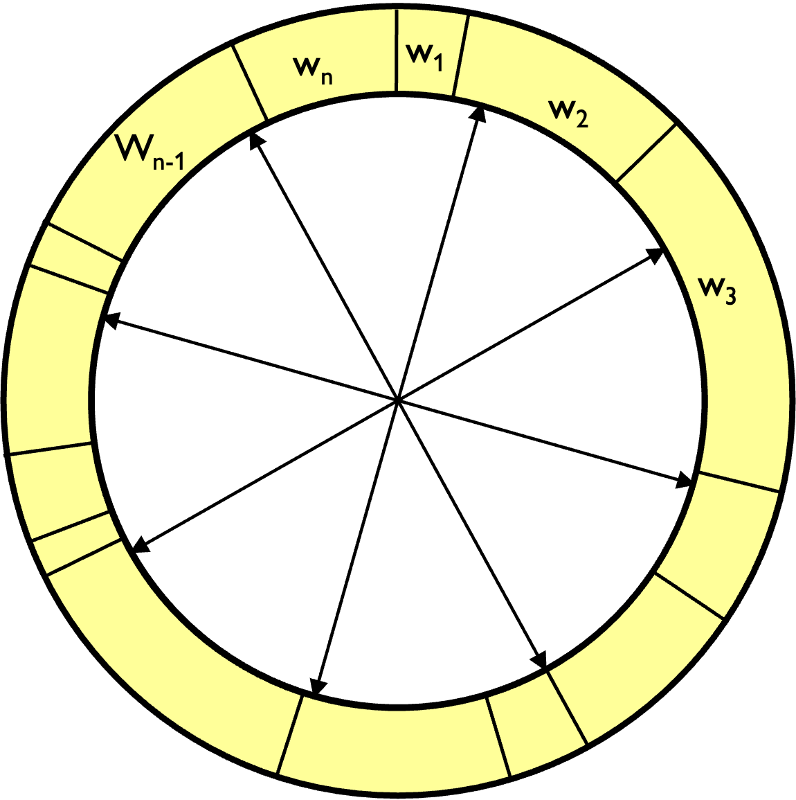
- Stochastic universal sampling
- Systematic resampling
- Linear time complexity
Resampling Particles: Example
• Suppose we only have 5 particles:
| Particle index | Normalized weight |
|---|---|
| 1 | 0.1 |
| 2 | 0.2 |
| 3 | 0.4 |
| 4 | 0.1 |
| 5 | 0.2 |
Q: What is the probability that after a round of resampling the highest probability particle (#3) is not sampled?
A: \(0.6^5 \simeq 0.077\)
i.e. there is nonzero probability that we will lose the highest-probability particle \(\rightarrow\) it will happen eventually
Resampling Particles: Example
• Suppose we only have 5 particles:
| Particle index | Normalized weight |
|---|---|
| 1 | 0.1 |
| 2 | 0.2 |
| 3 | 0.4 |
| 4 | 0.1 |
| 5 | 0.2 |
Q: What is the probability that after a round of resampling the highest probability particle (#3) is not sampled?
A: \(0.6^5 \simeq 0.077\)
Q: What is the probability that after a round of resampling one of the lowest-probability particles (#1) is not sampled?
A: \(0.9^5 \simeq 0.59\)
Resampling Particles: Consequences
- Weak particles very likely do not survive.
\(\mathbf{\Downarrow}\)
- Variance among the set of particles decreases , due to mostly sampling strong particles (i.e. loss of particle diversity).
\(\mathbf{\Downarrow}\)
- Loss of particle diversity implies increased variance of the approximation error between the particles and the true distribution .
\(\mathbf{\Downarrow}\)
- Particle deprivation: there are no particles in the vicinity of the correct state
How to address particle deprivation
Idea #1: don’t resample when only a few particles contribute
Idea #2: inject random particles during resampling
Idea #3: increase the number of particles (may be impractical depending on the computational complexity of the system)
How to address particle deprivation
- Idea #1: don’t resample when only a few particles contribute
- Effective sample size: \(N_{\text{eff}} = \frac{1}{\sum_{i=1}^{N}w_{i}^{2}}\)
- When all particles have equal, normalized weights (1/N) then \(N_{\text{eff}} = N\)
- When a single particle carries the entire weight then \(N_{\text{eff}} = 1/N\)
- and we have loss of particle diversity.
- Resample only when \(N_{\text{eff}} > N_{\text{thresh}}\)
- Idea #2: inject random particles during resampling
- Idea #3: increase the number of particles (may be impractical depending on the computational complexity of the system)
How to address particle deprivation
- Idea #1: don’t resample when only a few particles contribute
- Idea #2: inject random particles during resampling
- A small percentage of the particles’ states should be set randomly
- Pro: simple to code, reduces (but does not fix) particle deprivation
- Con: incorrect posterior estimation even when there are infinitely many particles
- A small percentage of the particles’ states should be set randomly
- Idea #3: increase the number of particles (may be impractical depending on the computational complexity of the system)
Particle Filter Algorithm
\[\begin{aligned} &\text{ParticleFilter}(\bar{z}_t, u_{t-1}) \\ &\qquad\bar{S}_t = \{\} \quad \bar{W}_t = \{\} \\ &\qquad\text{for particle index } m = 1...M \\ &\qquad\qquad \text{sample } x_t^{[m]} \sim p(x_t|x_{t-1}^{[m]}, u_{t-1}) \\ &\qquad\qquad w_t^{[m]} = p(\bar{z}_t|x_t^{[m]}) \\ &\qquad\qquad \bar{S}_t.\text{append}(x_t^{[m]}) \\ &\qquad\qquad \bar{W}_t.\text{append}(w_t^{[m]}) \\ \\ &\qquad S_t = \{\} \\ &\qquad\text{for particle index } m = 1...M \\ &\qquad\qquad \text{sample particle i from } \bar{S}_t \text{ with probability } \propto w_i^{[i]} \\ &\qquad\qquad S_t.\text{append}(x_t^{[m]}) \\ \\ &\quad\text{return } S_t \end{aligned}\]
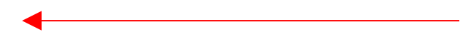 Actual observation and control received
Particle propagation/prediction:
noise needs to be added in order to make
particles differentiate from each other.
If propagation is deterministic then particles
are going to collapse to a single particle after a
few resampling steps.
Weight computation as measurement likelihood.
For each particle we compute the probability of the
actual observation given the state is at that particle.
Resampling step
Note: particle deprivation heuristics are not
shown here
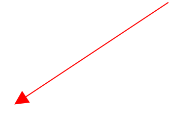
Note: here we work with a fixed number of particles
but in many applications, such as localization, you could work
with a reduced number of particles after the particles have
converged to the true estimate.
Such implementations of particle filters are called adaptive. An
example is the KLD-sampling adaptive particle filter, which is
not going to be covered here.
Examples: 1D Localization
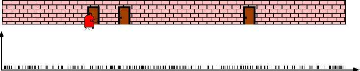
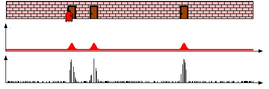
\(p(x)\)
\(p(z = \text{door} | x)\)
\(p(x|z_0 = \text{door})\)
Examples: 1D Localization
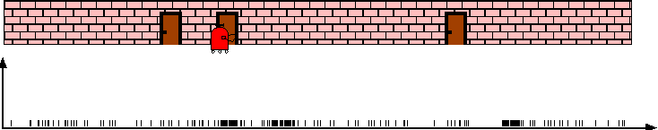
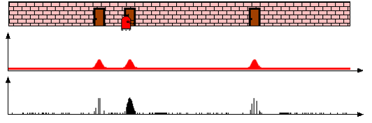
\(p(x|z_0 = \text{door}, u_0 = \text{right})\)
\(p(z = \text{door} | x)\)
\(p(x|z_0 = \text{door}, u_0 = \text{right}, z_1 = \text{door})\)
Examples: Monte Carlo Localization
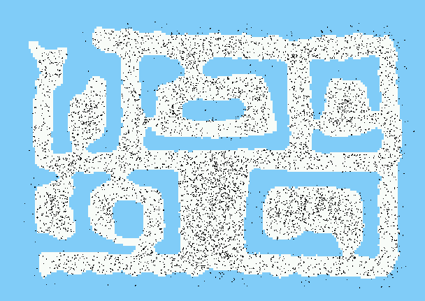Examples: Monte Carlo Localization
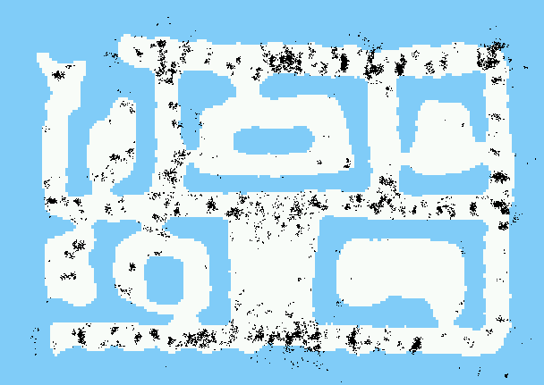After incorporating 10 ultrasound scans
Examples: Monte Carlo Localization
After incorporating 65 ultrasound scans
Using Ceiling Maps for Localization
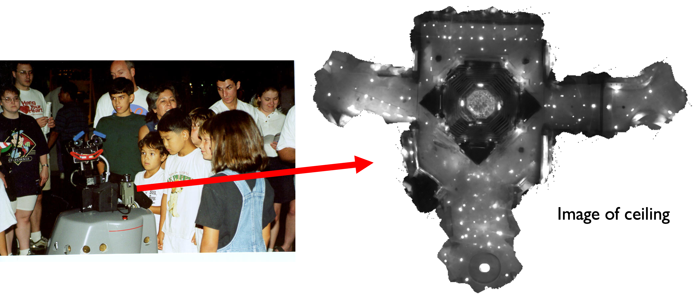Vision-based Localization
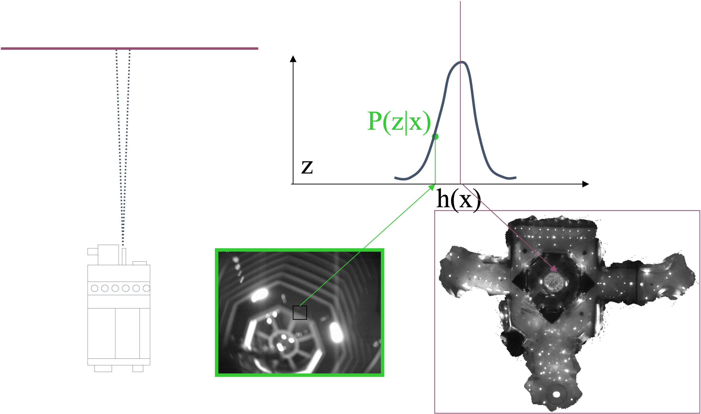Under a Light
Measurement z:
P(z|x):
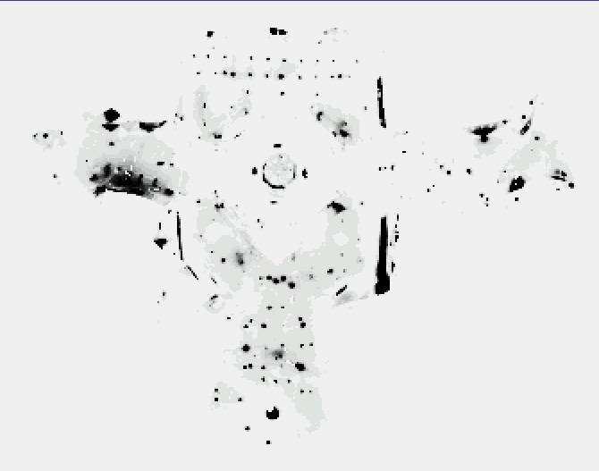
Next to a Light
Measurement z:
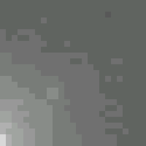
P(z|x):
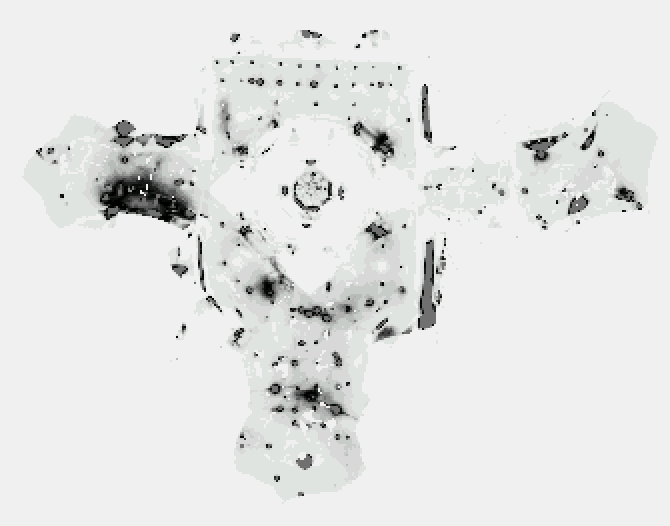
Elsewhere
Measurement z:
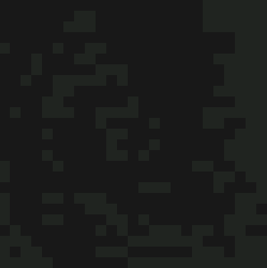
P(z|x):
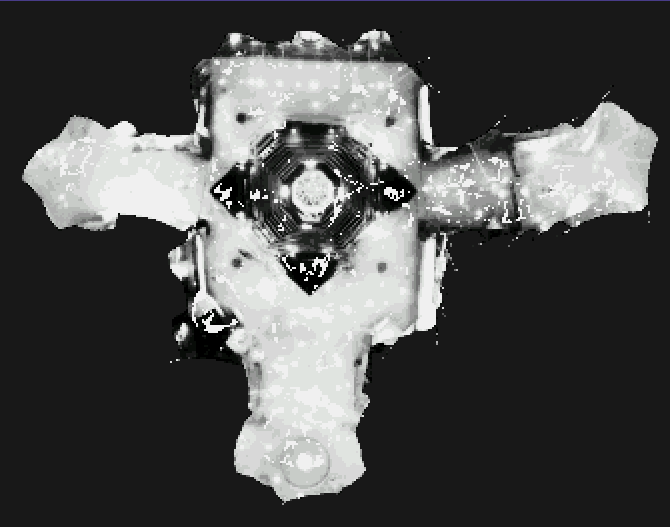
Global Localization Using Vision
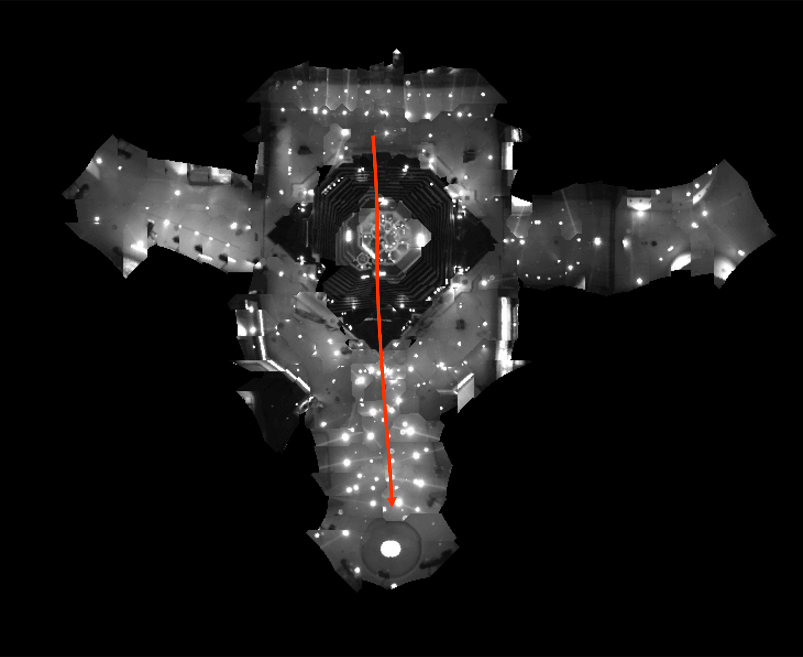Appendix 1
Why did we choose \(w_t^{[m]} \propto p(z_t|x_t^{[m]})\) as the importance weight for particle m?
Main trick: importance sampling , i.e. how to estimate properties/statistics of one distribution (f) given samples from another distribution (g)
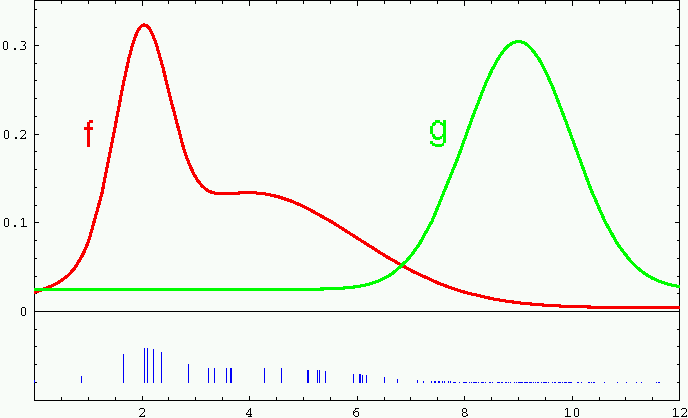
For example, suppose we want to estimate the expected value of f given only samples from g.
\[\begin{align*} \mathbb{E}_{x\sim f(x)}[x] &= \int xf(x)dx \qquad\qquad\quad \\ &= \int \frac{g(x)}{g(x)}xf(x)dx \qquad\qquad\quad \\ &= \int x\frac{f(x)}{g(x)}g(x)dx \qquad\qquad\quad \\ &= \mathbb{E}_{x\sim g(x)}\left[x\frac{f(x)}{g(x)}\right] \qquad\qquad\quad \\ &= \mathbb{E}_{x\sim g(x)}[x w(x)] \qquad\qquad\quad \end{align*}\]
Weights describe the mismatch
between the two distributions,
i.e. how to reweigh samples to
obtain statistics of f from
samples of g
Appendix 1
Why did we choose \(w_t^{[m]} \propto p(z_t|x_t^{[m]})\) as the importance weight for particle m?
Main trick: importance sampling , i.e. how to estimate properties/statistics of one distribution (f) given samples from another distribution (g)
In the case of particle filters
\(f(x_t) = p(x_t | z_{0:t}, u_{0:t-1}) = bel(x_t) \qquad g(x_t) = p(x_t | z_{0:t-1}, u_{0:t-1}) = \overline{bel}(x_t)\)
For example, suppose we want to estimate the expected value of f given only samples from g.
\[\begin{align*} \mathbb{E}_{x\sim f(x)}[x] &= \int xf(x)dx \qquad\qquad\quad \\ &= \int \frac{g(x)}{g(x)}xf(x)dx \qquad\qquad\quad \\ &= \int x\frac{f(x)}{g(x)}g(x)dx \qquad\qquad\quad \\ &= \mathbb{E}_{x\sim g(x)}\left[x\frac{f(x)}{g(x)}\right] \qquad\qquad\quad \\ &= \mathbb{E}_{x\sim g(x)}[x w(x)] \qquad\qquad\quad \end{align*}\]
Weights describe the mismatch
between the two distributions,
i.e. how to reweigh samples to
obtain statistics of f from
samples of g
Posterior belief after update \(\qquad\qquad\qquad\) Belief after propagation, before update
Appendix 1
Why did we choose \(w_t^{[m]} \propto p(z_t|x_t^{[m]})\) as the importance weight for particle m?
Main trick: importance sampling , i.e. how to estimate properties/statistics of one distribution (f) given samples from another distribution (g)
In the case of particle filters
\(f(x_t) = p(x_t | z_{0:t}, u_{0:t-1}) = bel(x_t) \qquad g(x_t) = p(x_t | z_{0:t-1}, u_{0:t-1}) = \overline{bel}(x_t)\)
For example, suppose we want to estimate the expected value of f given only samples from g.
\[\begin{align*} w(x_t^{[m]}) & = \frac{f(x_t^{[m]})}{g(x_t^{[m]})} \\ & \propto \frac{p(z_t|x_t^{[m]}) p(x_t^{[m]}|x_{t-1}^{[m]}, u_{t-1}) bel(x_{t-1}^{[m]})}{p(x_t^{[m]}|x_{t-1}^{[m]}, u_{t-1}) bel(x_t^{[m]})} \\ & \propto p(z_t|x_t^{[m]}) \end{align*}\]
Posterior belief after update \(\qquad\qquad\qquad\) Belief after propagation, before update